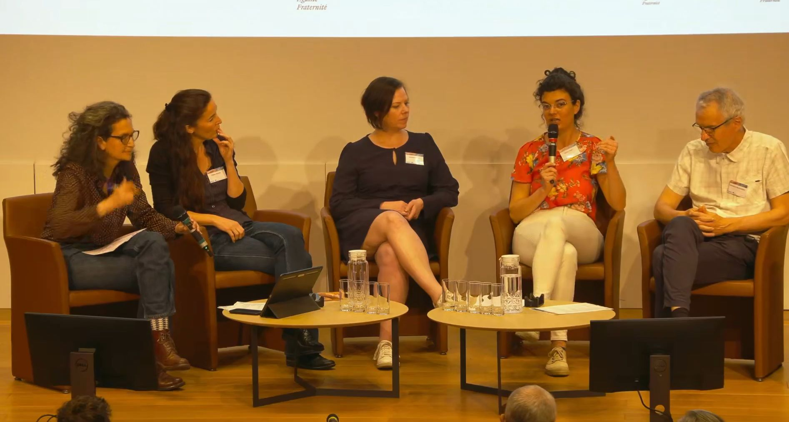

🎤 Recorded Presentations
Sirami S., Huet S.
Food labels' contribution to biodiversity..
ODR & INAO Joint Webinar co-organised by the Observatoire du Développement Rural and INAO
Sirami S., Bockstaller C., Huet S.
"Approaches to quantify the impact of agricultural products on biodiversity."
BiodivLabel Restitution Colloquium — Collective expertise congress, Paris, France. Oral presentation.

Huet S.
"Environmental footprinting of agricultural products."
Dynafor Team Seminar — INRAE Toulouse, France. Oral presentation.
Huet S.
"Sarah Huet, researcher in microbial ecology, presents her research work"
Experimentarium Network — University of Burgundy, France. Interview.